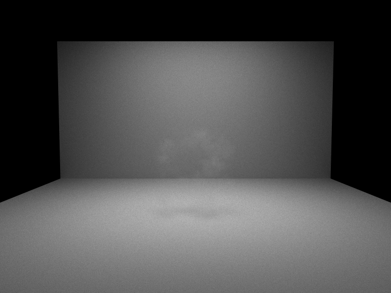
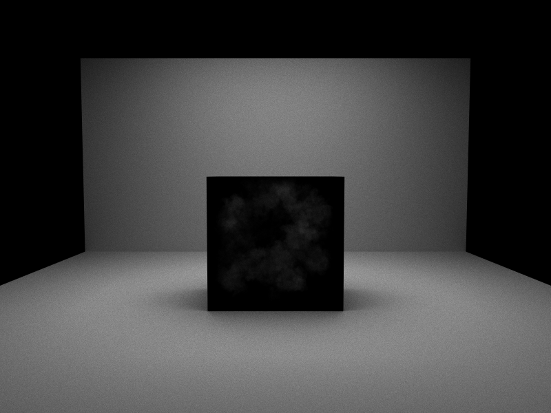

This project extends the OptiX path tracer built through Homeworks 1–4 — which already has GGX BRDFs, next-event estimation, and multiple importance sampling — with volumetric light transport for heterogeneous participating media. The goal was a photorealistic CS2-style smoke grenade screen. However simply the smoke rendering proved to be challenging initself.
The full pipeline was designed and implemented: custom AABB geometry in OptiX, a delta-tracking
integrator with Henyey-Greenstein phase sampling, volume NEE with transmittance shadow rays, and a
.rawvdb density loader. The VDB import broke at the CMake/NanoVDB linkage stage;
the renders below use a procedurally generated density field as a fallback. That was later replaced
using Houdini shell python that is noted within scene / final this is executed to export following vdb
to rawvdb. I am not a current fan of my implemnetation as I was working on theoertical temperature etc.
Some of the corresponding code is deleted and others is written in broken_ format for multiple channels
of geometry, temperature.
This is some achknowledgment of honestly the lack of time and effort dedicated. I had innumerable issues with getting effective geometry to framework the rendering and their was likely alternatives that I could have used. instead of openVDB and or houdini to obtain raw vdb daw to process


nx, ny, nz) and a flat float32 voxel array exported from Houdini via a Python script, normalises to [0,1], and uploads to an OptiX buffer. The Houdini export script is in the testing folder. NanoVDB CMake linkage fails on the lab machines, so only rawVDB data was loaded for the final renders.Both renders use a procedural 3D noise field as a stand-in for real VDB data. The dark cloud-like regions are high-density clusters where σt is large enough to absorb most incident light. The contrast render is more technically telling — the darker patch on the rear wall and floor is real volumetric attenuation: shadow rays from those surface points pass through the medium and are weighted by transmittance, reducing the NEE contribution.